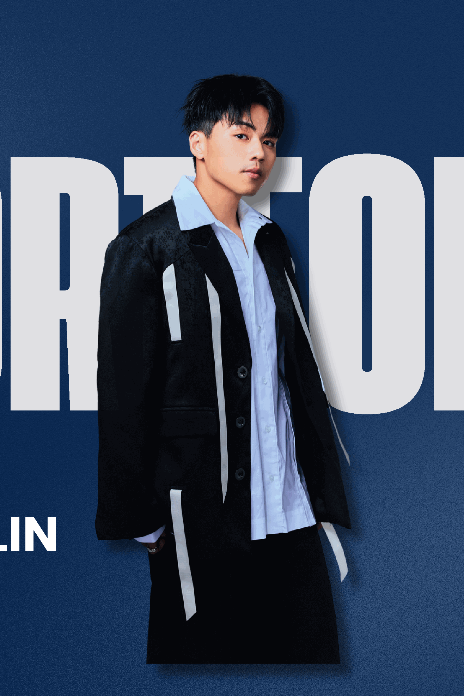
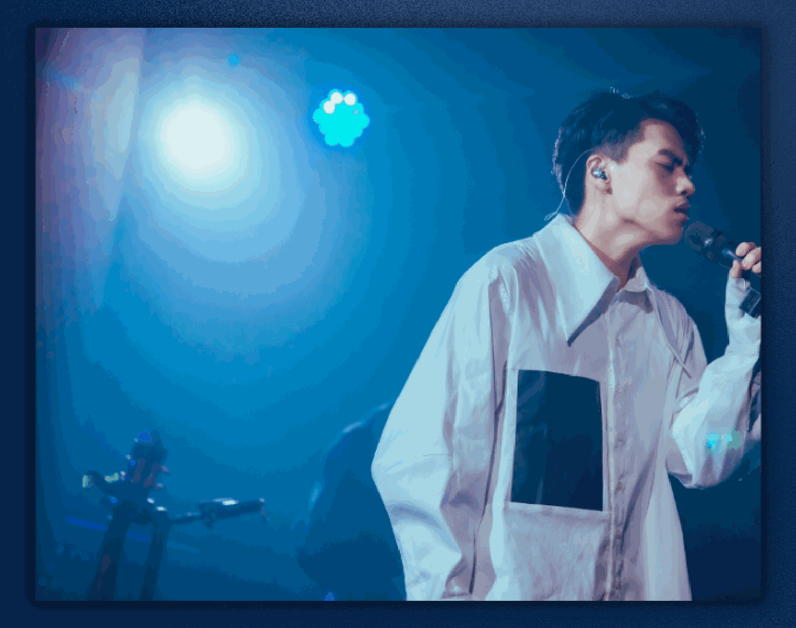
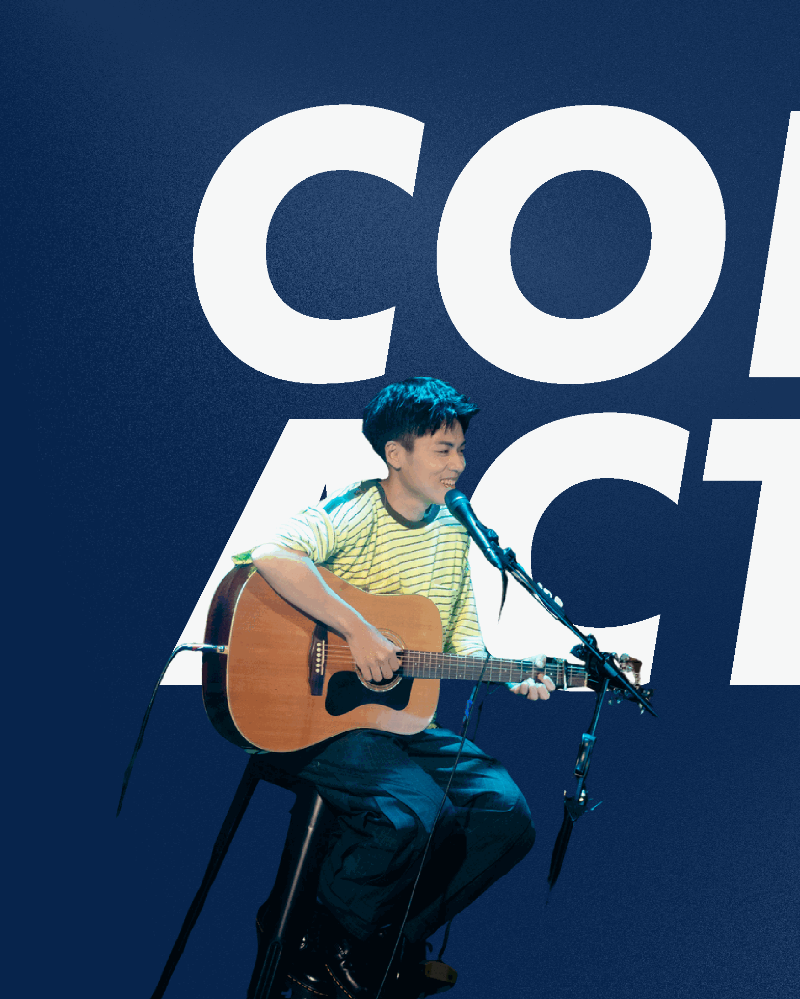

Hung Yu Lin
以溫暖敘事、顆粒感嗓音橫跨 Pop Ballad、流行搖滾與 Indie Pop， 十年創作沉澱，帶著憂鬱卻灑脫的浪漫。

Live Performance「溫暖情歌的美聲代表，
風格輕鬆愜意。」
林鴻宇街頭演唱及網路翻唱發跡，累積超過十年音樂創作與現場演出經驗。 曾參與華納音樂 WIN 潛力新星計畫，主打單曲《想把空白的日子留給你》 在 KKBOX 即時榜奪冠，Spotify 總播放突破 400 萬次。
詞曲《我也明白》受盧廣仲邀請收錄於 2025 翻唱專輯《傷心早餐店》， 改名《我只怪我自己》。現正籌備第二張個人專輯。
林鴻宇的定位非常難得，像是在日常中全碟循環的陪伴角色。
溫暖情歌的美聲代表，風格輕鬆愜意。
擁有質感與層次聲線，溫暖又糾結。

演出邀約・創作合作・媒體採訪
Email：hungyulin9@gmail.com